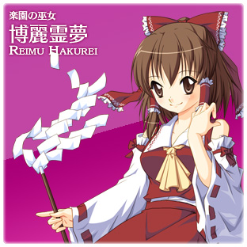
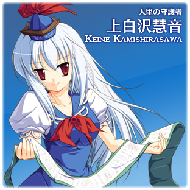

プレイヤー説明
博麗霊夢

ワイドショットを持ちそれなりの距離のダッシュと広範囲を掃討できるボムを持つ。万人受けする性能。
ボムは緊急回避だけでなく、ボムを撃ちながらダッシュで敵の塊に突っ込み、内側から一気に撃破するという攻撃的な戦術にも使える。
上白沢慧音

幅の狭いショットは連射力が高め。ダッシュは短距離かつヒートが溜まりやすく連発できないが、長距離を突進で駆け抜けるボムが超性能。
ボムの突進はダッシュと違い、当たった敵にダメージが通るので爽快感抜群。ただし、壁に少しでも触れたら即停止、一転大ピンチの危ない一面も。
ボムは移動中に発動すると移動方向へ、停止中に発動すると照準のある方向へ突進を開始し、方向入力で方向転換が可能。攻撃的な利用ももちろんだが、遠距離を一気に移動する手段としても使える。ただし、反応が悪いうえ前述の通り障害物に少しでも触れたらボムは中断される。自在に操るのには習熟が必要。